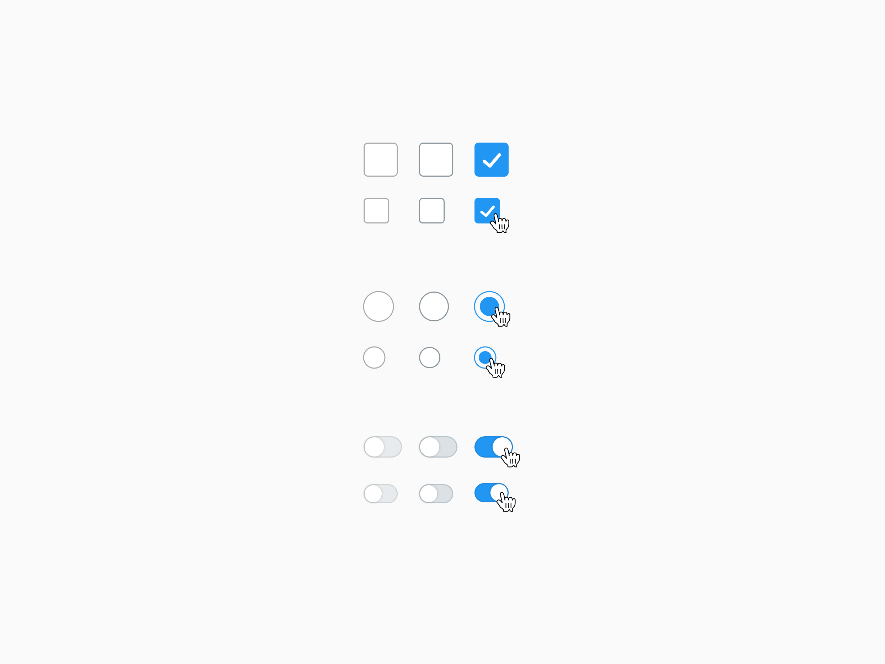
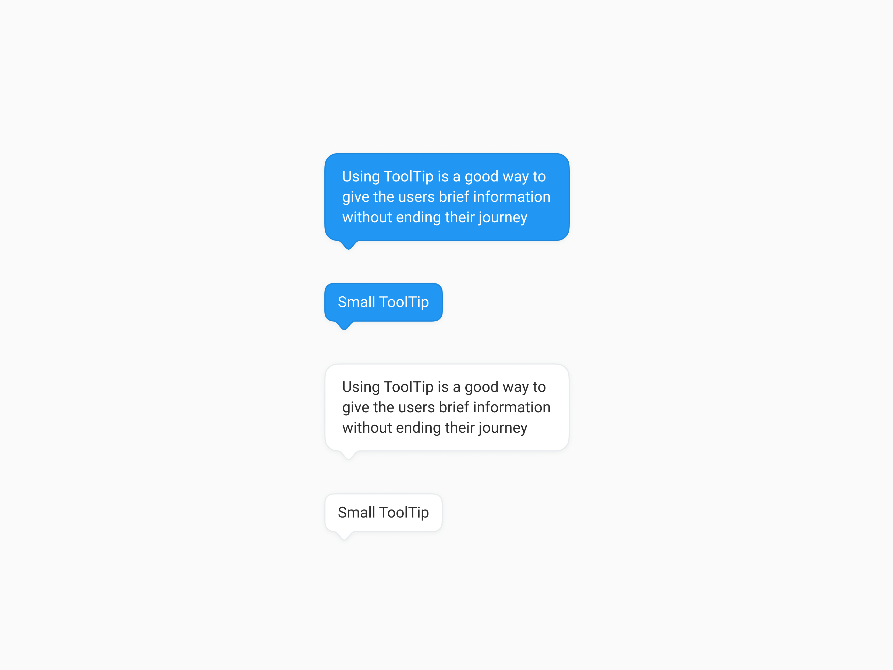
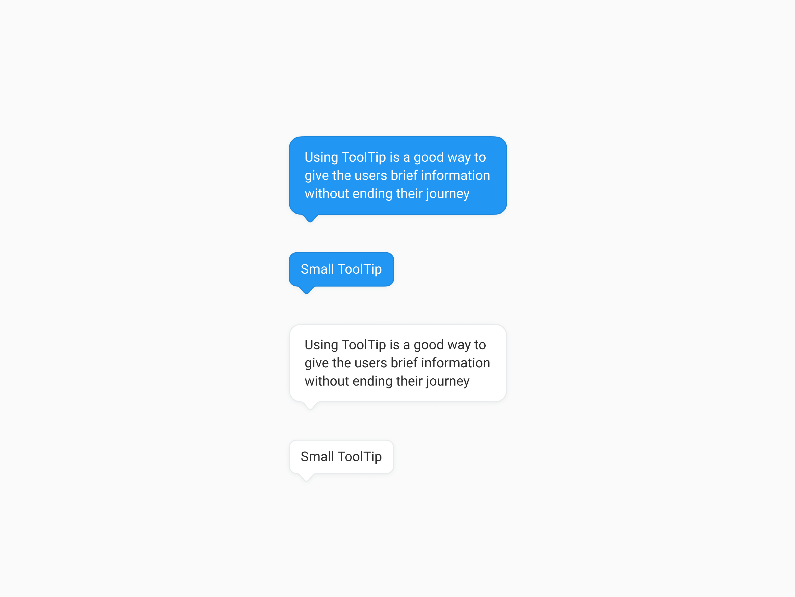
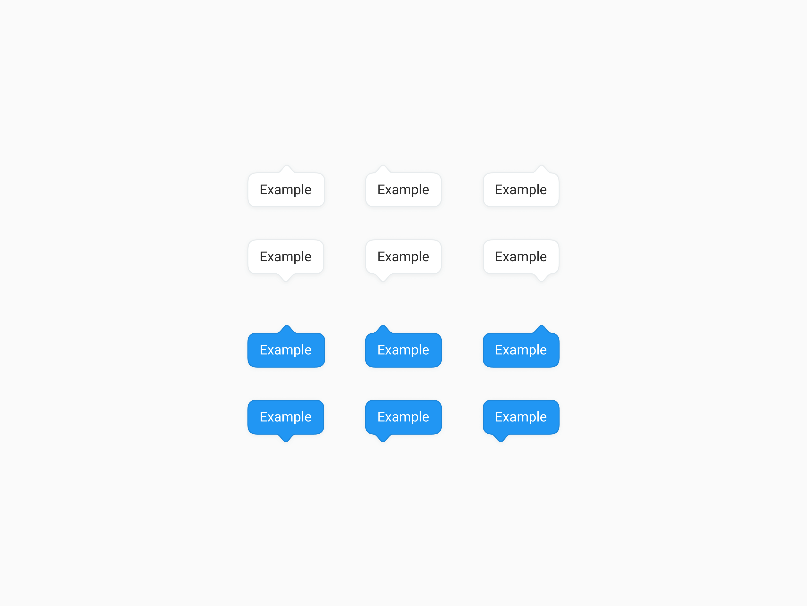
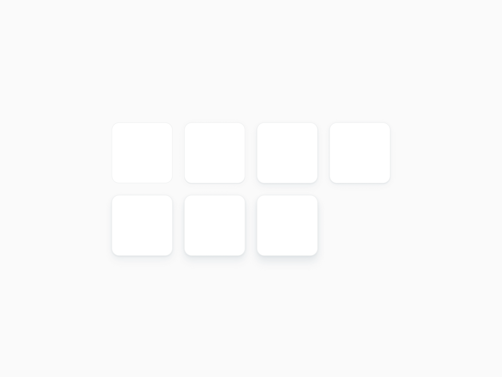

Overview
Smartrike is an industry leader in ride-on-toys with over 20,000,000 customers, they hired me to research and design a new checkout wizard for them. I also created for them a new design language. The company tested the project with A/B testing and the results exceeded expectations - statistically significant 20% paid users conversion rate increase for a multi-million dollar company.

Old Checkout design
Clear & easy experience
The checkout wizard is one of the most important pages in an e-com site - the user already showed intent to buy the product and this is their final step. We must not lose the customer at this critical stage. Non-functional design is bad practice, especially for businesses. First thing I focused on was to create a clear and usable user experience, by dividing the information into 3 stages, creating an easier process for the users. Users want to know why and what they're buying. By providing the user all the crucial information, we keep them in the funnel.

Addressing users' hesitations
Other issues concern the users hesitations about the site's security, reliability and the ordered product quality. By adding various components I have addressed each of these concerns to give the user a carefree experience.
 

Each element has an effect on the result, if something seems unusual to the user it must be explained. For example, to proactively ease users' concerns about providing their information, an explanation is added about how the information will be used, and why it is required.
Tooltip with an explanation to instill trust
Reducing friction
In order to reduce the friction with the user, I’ve added and changed certain aspects throughout the whole shopping experience. For example, a feature of auto-completion of your shipping address during the checkout, including street name, postal code, city and state. Another feature I’ve added is being able to continue with the purchase as a guest, significantly reducing the friction created in the process of signing up.
Creating a new design language
The client had a desire for a new modern feel for the product. Working closely with Smartrike's art director, we chose a new friendly and inviting design language, that is suitable for the target audience. All elements are documented in a design system library, such as buttons, colors, typography, spacing, and components.
The conducted research and new design language brought to the design showcased below. This project is live today and I'm happy to say that the client is pleased with the result.